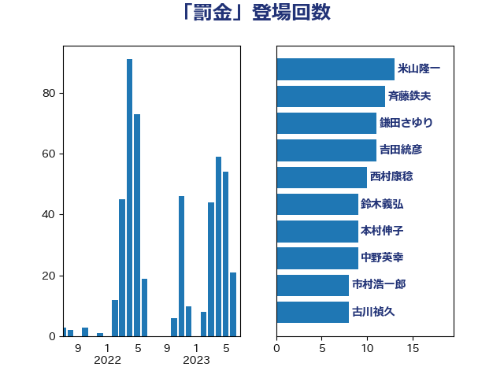

単語「罰金」

| 米山隆一 | 立憲民主党 | 13 回 |
| 斉藤鉄夫 | 公明党 | 12 回 |
| 鎌田さゆり | 立憲民主党 | 11 回 |
| 吉田統彦 | 立憲民主党 | 11 回 |
| 西村康稔 | 自由民主党 | 10 回 |
| 鈴木義弘 | 国民民主党 | 9 回 |
| 本村伸子 | 日本共産党 | 9 回 |
| 中野英幸 | 自由民主党 | 9 回 |
| 市村浩一郎 | 日本維新の会 | 8 回 |
| 古川禎久 | 自由民主党 | 8 回 |
| 道下大樹 | 立憲民主党 | 7 回 |
| 梅村聡 | 日本維新の会 | 7 回 |
| 馬淵澄夫 | 立憲民主党 | 6 回 |
| 階猛 | 立憲民主党 | 6 回 |
| 福田昭夫 | 立憲民主党 | 6 回 |
| 川合孝典 | 国民民主党 | 6 回 |
| 高木かおり | 日本維新の会 | 5 回 |
| 福島伸享 | 無所属 | 5 回 |
| 加藤勝信 | 自由民主党 | 5 回 |
| 青柳仁士 | 日本維新の会 | 4 回 |
| 金子恭之 | 自由民主党 | 4 回 |
| 羽田次郎 | 立憲民主党 | 4 回 |
| 河野太郎 | 自由民主党 | 4 回 |
| 森屋隆 | 立憲民主党 | 4 回 |
| 村田享子 | 立憲民主党 | 4 回 |
| 天畠大輔 | れいわ新選組 | 4 回 |
| 佐々木さやか | 公明党 | 4 回 |
| 鈴木俊一 | 自由民主党 | 3 回 |
| 野間健 | 立憲民主党 | 3 回 |
| 野村哲郎 | 自由民主党 | 3 回 |
| 足立康史 | 日本維新の会 | 3 回 |
| 西田昌司 | 自由民主党 | 3 回 |
| 緒方林太郎 | 無所属 | 3 回 |
| 篠原孝 | 立憲民主党 | 3 回 |
| 田村智子 | 日本共産党 | 3 回 |
| 浜田聡 | NHK党 | 3 回 |
| 東徹 | 日本維新の会 | 3 回 |
| 後藤祐一 | 立憲民主党 | 3 回 |
| 岸田文雄 | 自由民主党 | 3 回 |
| 山添拓 | 日本共産党 | 3 回 |
| 小野泰輔 | 日本維新の会 | 3 回 |
| 井坂信彦 | 立憲民主党 | 3 回 |
| 三宅伸吾 | 自由民主党 | 3 回 |
| 高橋克法 | 自由民主党 | 2 回 |
| 高市早苗 | 自由民主党 | 2 回 |
| 長峯誠 | 自由民主党 | 2 回 |
| 鈴木庸介 | 立憲民主党 | 2 回 |
| 遠藤良太 | 日本維新の会 | 2 回 |
| 西田昭二 | 自由民主党 | 2 回 |
| 藤丸敏 | 自由民主党 | 2 回 |
| 竹内真二 | 公明党 | 2 回 |
| 福重隆浩 | 公明党 | 2 回 |
| 福島みずほ | 社会民主党 | 2 回 |
| 神津たけし | 立憲民主党 | 2 回 |
| 礒崎哲史 | 国民民主党 | 2 回 |
| 田中健 | 国民民主党 | 2 回 |
| 猪瀬直樹 | 日本維新の会 | 2 回 |
| 牧義夫 | 立憲民主党 | 2 回 |
| 清水真人 | 自由民主党 | 2 回 |
| 永岡桂子 | 自由民主党 | 2 回 |
| 櫻井周 | 立憲民主党 | 2 回 |
| 林芳正 | 自由民主党 | 2 回 |
| 杉田水脈 | 自由民主党 | 2 回 |
| 後藤茂之 | 自由民主党 | 2 回 |
| 岸真紀子 | 立憲民主党 | 2 回 |
| 山田勝彦 | 立憲民主党 | 2 回 |
| 小倉將信 | 自由民主党 | 2 回 |
| 宮本徹 | 日本共産党 | 2 回 |
| 守島正 | 日本維新の会 | 2 回 |
| 大島九州男 | れいわ新選組 | 2 回 |
| 堤かなめ | 立憲民主党 | 2 回 |
| 和田義明 | 自由民主党 | 2 回 |
| 古庄玄知 | 自由民主党 | 2 回 |
| 井上哲士 | 日本共産党 | 2 回 |
| 齋藤健 | 自由民主党 | 1 回 |
| 高良鉄美 | 無所属 | 1 回 |
| 高橋英明 | 日本維新の会 | 1 回 |
| 高木真理 | 立憲民主党 | 1 回 |
| 須藤元気 | 無所属 | 1 回 |
| 阿部弘樹 | 日本維新の会 | 1 回 |
| 長浜博行 | 無所属 | 1 回 |
| 藤岡隆雄 | 立憲民主党 | 1 回 |
| 葉梨康弘 | 自由民主党 | 1 回 |
| 落合貴之 | 立憲民主党 | 1 回 |
| 萩生田光一 | 自由民主党 | 1 回 |
| 紙智子 | 日本共産党 | 1 回 |
| 竹詰仁 | 国民民主党 | 1 回 |
| 竹内譲 | 公明党 | 1 回 |
| 神谷宗幣 | 参政党 | 1 回 |
| 神田潤一 | 自由民主党 | 1 回 |
| 石井苗子 | 日本維新の会 | 1 回 |
| 田村まみ | 国民民主党 | 1 回 |
| 田名部匡代 | 立憲民主党 | 1 回 |
| 湯原俊二 | 立憲民主党 | 1 回 |
| 浜口誠 | 国民民主党 | 1 回 |
| 池畑浩太朗 | 日本維新の会 | 1 回 |
| 永井学 | 自由民主党 | 1 回 |
| 榛葉賀津也 | 国民民主党 | 1 回 |
| 森山浩行 | 立憲民主党 | 1 回 |
| 柿沢未途 | 無所属 | 1 回 |
| 柚木道義 | 立憲民主党 | 1 回 |
| 松沢成文 | 日本維新の会 | 1 回 |
| 松本剛明 | 自由民主党 | 1 回 |
| 広瀬めぐみ | 自由民主党 | 1 回 |
| 岩谷良平 | 日本維新の会 | 1 回 |
| 岩渕友 | 日本共産党 | 1 回 |
| 山本剛正 | 日本維新の会 | 1 回 |
| 山口壯 | 自由民主党 | 1 回 |
| 山下貴司 | 自由民主党 | 1 回 |
| 小宮山泰子 | 立憲民主党 | 1 回 |
| 寺田稔 | 自由民主党 | 1 回 |
| 宮路拓馬 | 自由民主党 | 1 回 |
| 宮本岳志 | 日本共産党 | 1 回 |
| 宮口治子 | 立憲民主党 | 1 回 |
| 奥野総一郎 | 立憲民主党 | 1 回 |
| 大西健介 | 立憲民主党 | 1 回 |
| 大岡敏孝 | 自由民主党 | 1 回 |
| 大口善徳 | 公明党 | 1 回 |
| 塩川鉄也 | 日本共産党 | 1 回 |
| 吉川赳 | 無所属 | 1 回 |
| 吉川沙織 | 立憲民主党 | 1 回 |
| 古賀之士 | 立憲民主党 | 1 回 |
| 勝部賢志 | 立憲民主党 | 1 回 |
| 伊波洋一 | 無所属 | 1 回 |
| 串田誠一 | 日本維新の会 | 1 回 |
| 下条みつ | 立憲民主党 | 1 回 |
| 上田清司 | 国民民主党 | 1 回 |
| ながえ孝子 | 無所属 | 1 回 |
| たがや亮 | れいわ新選組 | 1 回 |